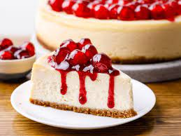

Chantal's New York Cheesecake

Description
This recipe makes a classic New York-style cheesecake with a buttery graham cracker crust and rich, dense filling made from cream cheese,
eggs, sugar, sour cream, vanilla, a hint of lemon, and a few tablespoons of flour. The flour might seem like an unusual addition,
but it's the secret to success: a little starch helps prevent the cake from cracking and also makes the filling just a bit lighter.
Ingredients
- 15 graham crackers, crushed
- 2 tbs. butter, melted
- 32 oz. cream cheese
- 1.5 cups white sugar
- 3/4 cup milk
- 4 eggs
- 1 cup sour cream
- 1 tbs. vanilla extract
- 1/4 cup all-purpose flour
Steps
- Preheat oven to 350°F. Grease a 9 inch springform pan.
- In a medium bowl, mix graham cracker crumbs with melted butter. Press onto bottom of springform pan.
-
In a large bowl, mix cream cheese with sugar until smooth. Blend in milk, and then mix in the eggs one at a time, mixing just enough to incorporate.
Mix in sour cream, vanilla and flour until smooth. Pour filling into prepared crust.
-
Bake in preheated oven for 1 hour. Turn the oven off, and let cake cool in oven with the door closed for 5 to 6 hours; this prevents cracking.
Chill in refrigerator until serving.